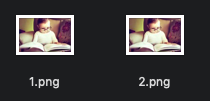
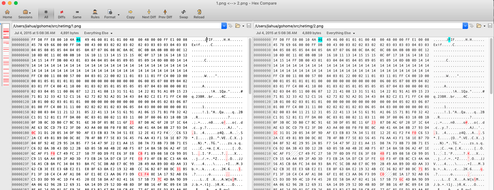
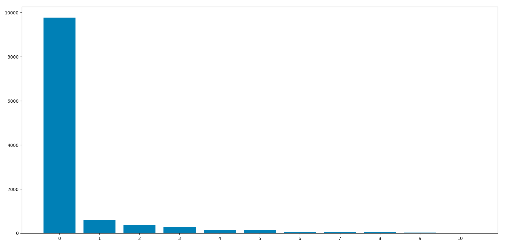
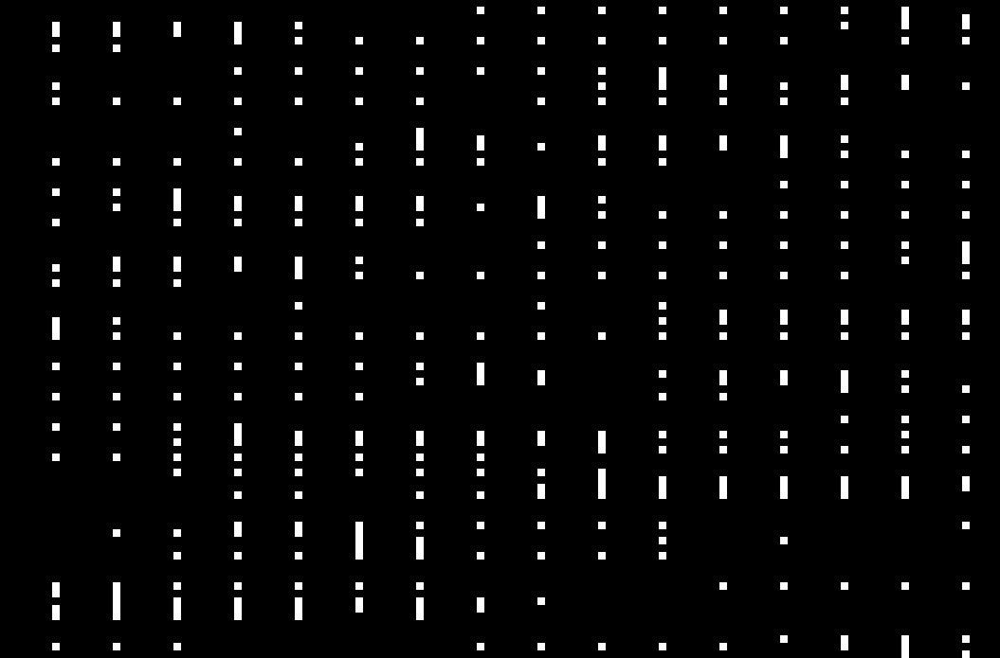

微信头像
项目需要基于头像、昵称对不同实体账号下的微信用户进行匹配。基于这个思路，打算先下载微信头像的图像，后计算其MD5，“单元测试”了下这个简单方法，结果惊人。
同一个人的同一个头像链接返回的图像内容都不一样。内容不一样，MD5值也就不一样。
看来微信对我们这些拙劣的手段早有防备。
微信头像内容分析
同一个头像链接下载两次。
$ wget -O 1.png https://wx.qlogo.cn/mmopen/vi_32/DYAIOgq83eoc614h6RfCUnwQTblG9y2dq4g5PKVicVZd5CQO9JNdPCWCovl8cmsvxQcWDemcLYGW6pSt97uUW5A/132
$ wget -O 2.png https://wx.qlogo.cn/mmopen/vi_32/DYAIOgq83eoc614h6RfCUnwQTblG9y2dq4g5PKVicVZd5CQO9JNdPCWCovl8cmsvxQcWDemcLYGW6pSt97uUW5A/132
$ md5 1.png
MD5 (1.png) = dd6aa938cbec381a3e83702776be88a3
$ md5 2.png
MD5 (2.png) = 83668a6ad7eeee8fa8e5e0db339233d1
肉眼比较
肉眼完全无法区分。

字节级比较
两张图，可以看出差异很大。

像素级比较
为了方便对比，图先灰度化（一个像素点的RGB三值改为1个值）。

两张灰度图差值的数据分布。x轴为差值，y轴为出现次数。
0代表相同位置的像素点相同，非0代表相同位置像素点有差异及其差异幅度。
0出现次数最多，可见两张图的大部分像素点的值是相同的。差异主要分为两部分，1-10 闭区间。（试了几张图）

另一种可视化，白色代表两图相同位置像素点不同。可见，图片污染非常严重。
上图生成脚本：
import numpy as np
from PIL import Image
def read_to_2d_array(filename):
img = Image.open(filename)
img = img.convert('L')
print(img.size)
return np.array(img)
data1 = read_to_2d_array("1.png")
data2 = read_to_2d_array("2.png")
# NOTE: np.uint8(3) - np.uint8(4) = 255 引起的误差让我绝望了
diff = np.uint8(np.abs(np.int16(data1) - np.int16(data2)))
import matplotlib.pyplot as plt
x, y = np.unique(diff, return_counts=True)
x = [f"{e}" for e in x]
print(x)
print(y)
plt.bar(x, y)
plt.show()
print("count of non-zero point", (diff > 0).sum())
diff = diff > 0
Image.fromarray(diff, mode='1').save("diff12.png", "PNG")
目标：消除白点
要达到多份干扰图生成相同的哈希值的效果，就是要消除白点，也就是降采样图像，主要两个方式：
- 降低灰度级别。比如 8bit（256级灰度）图像压缩到6bit（64级灰度）图像，原像素点0、1、2、3归为一个像素点0，以此类推。
- 降低图像尺寸。比如尺寸同比缩小一倍。
在有限数据量下测试，32级灰度，10x10 尺寸下，白点消失了。
import numpy as np
from PIL import Image
def read_to_2d_array(filename, size=None, bit=8):
img = Image.open(filename)
img = img.convert('L')
if size is not None:
img = img.resize(size)
data = np.array(img)
if bit < 8:
data = data // (2**(8-bit)) * (2**(8-bit))
return data
size_options = [
(64, 64),
(40, 40),
(32, 32),
(20, 20),
(10, 10)
]
for bit in range(8, 0, -1):
for size in size_options:
data1 = read_to_2d_array("1.png", size=size, bit=bit)
data2 = read_to_2d_array("2.png", size=size, bit=bit)
diff = np.uint8(np.abs(np.int16(data1) - np.int16(data2)))
print(diff.shape)
if (diff > 0).sum() == 0:
Image.fromarray(data1).save(f"{bit}_{size}_1.png", "PNG")
Image.fromarray(data2).save(f"{bit}_{size}_2.png", "PNG")
ratio = (diff > 0).sum() / (diff.shape[0]*diff.shape[1])
print("bit: {0}, size: {1}, 脏点率：{2}".format(bit, size, ratio))
参考：
总结
微信为了保护用户隐私，防止通过头像昵称进行用户匹配，对每次通过头像链接获取的头像内容加入了随机的扰动，像素点扰动幅度范围在 [-10, 10]，大概15%的像素点（两份干扰图的差异），肉眼难以察觉。
最终图像哈希用于 SQL JOIN，需要将有些许差异的图像映射成一个值。不考虑相似度算法。
通过在图像色彩、尺寸上降维，初步解决了这个问题。
Last modified on 2020-05-14